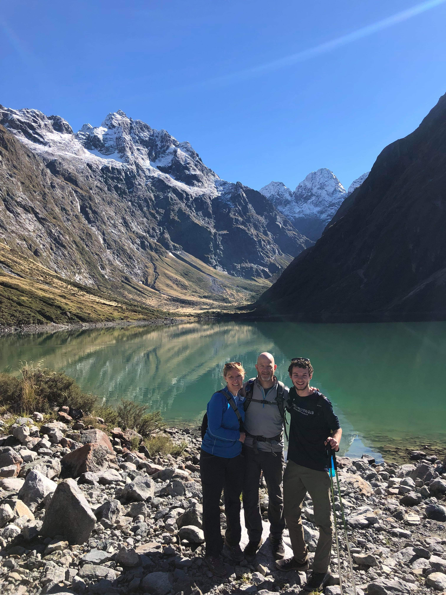

Identity
Well, it seems I have fallen a bit behind.
There is something proud in that. I am busy enough living that I have trouble sitting down to talk. Or, perhaps more accurately, it isn’t a priority. In a world tied to the cultivation of an image, so many people are forgetting that an experience can be so much more powerful than a post. I think that slowly, I am finding the balance between sharing my experiences and actually experiencing them. For all the negatives of social media, there is nothing wrong with its core idea. Human connection and storytelling have power.
Lets rewind a bit, to early April. A time that feels a little bit to recent to be almost a month in the past. Funny thing, time. I was emerging from a harrowing work week, me and my friends set off on a 5 hour journey for a club sponsored trip to the Blue Mountains, a national park outside of Sydney.

Now to simply say I was excited would be an injustice. For more than 10 years, I have spent at least a little bit of my summer on trails. From Alaska to New York, our family has covered a lot of ground. To my sister’s chagrin, little to none of it could be described with the word “sand”. I have to say, I have learned to enjoy the beach. Although Bondi and Manly might be famous, the beaches at Newcastle are locally known for their world class surf and sand.
A 3 month hobby, however, still can’t compare to one a decade in the making. So the prospect of hiking and anything labeled as a “mountain” was exhilarating.
For all my anticipation, this trip was not anything like what I had experienced with my family. Staying in a hostel with over a hundred fellow students, hiking for 8+ hours, two days straight, and doing it all with people your age. Now, to some of you, I’m sure this isn’t appealing at all. One thing I’ve learned is that sometimes knowing what you don’t like is just as useful as learning what you do.
And I liked this trip. Walking at the front of the group, with rainforest at my front and friends at my back, I knew. I knew that this was something I wanted to do for the rest of my life. Something I wanted to be a part of my life. A piece of the puzzle filled in.


At this point, I hadn’t been cooking meat or really eating it for a few months. Here and there I would eat it if offered, but it wasn’t really a part of my diet. Thanks to my Dad’s dietary journey, I had always entertained the thought of going vegetarian. Studying here in Newcastle, I’ve met a bunch of vegetarians and vegans, each with their own reasons. I’d done some research, read the papers and looked at the statistics, but I hadn’t found the internal motivation to commit to the cause.
When I realized how much I valued the environment, the internal motivation came quickly and easily. This was something that I, a single person, could do to help the world that I love. So I made the jump.
Only a week later, I was on the move again. To the land of roadkill, Tasmania. Contrary to popular belief, Tasmania is actually a state of Australia, not its own country.

I joined up with a small group of friends, and with a rental car we toured the island. Ocean coasts and campfires, wildlife sightings and car rides. Nothing can beat the quality time, shared experiences, and bonding that comes from traveling with your friends.


When Haley, Lauren, Dil and Cameron left for Melbourne, I made my way to Sydney to meet up with my parents.
With so much to cover on the NZ trip, I know that I will end up skimming over the highlights. The trip deserves a post by itself, but in the interests of time, Ill give some updates here.
I think the trip had two obvious benefits, each with a little more complexity than they appear.
First of all, it was amazing to see my parents for the first time in about three months!

In hindsight, that isn’t much longer than a normal school semester in NJ, but the distance does change that a little. The experience as a whole was a bit bittersweet. It was a reminder of life in the US, for better and worse. With American life comes all the memories of my childhood and family, traditions and culture I’ve lost in my time abroad. There’s a funny thing about culture. It is a function of the people and content you live around.
People are a bit like fancy sponges in this sense (hang with me), when surrounded with water they slowly absorb it. Take the sponge out of the water and place it on the counter and the sponge does two things. It tries to recreate its old environment, unintentionally, by leaking the water it holds. However, through this process, the sponge slowly absorbs air, which replaces the water.
At this point in my stay, I’ve lost some of the American, and more specifically, North Eastern, philosophy I was raised upon. Instead I’ve learned from my surroundings and adopted very Australian values. For me, that has been an essential part of my personal growth. Getting a hint of American culture is a gentle reminder of how easily those changes can be swept away through reimmersion. Luckily, people are a bit more complicated than sponges, so I still stand a chance.
The second takeaway from the trip is an affirmation, evidence to support my newfound values. Experiencing nature in dozens of ways, taking in its beauty, and traveling in new ways, gives opportunities to figure out what it is, exactly, that I like to do. Although the roadside beauty of New Zealand was beautiful, I felt like something was missing. Fast forward to a day hike of the Routeburn track (a 4 day route in total), where I found myself immersed in the wild. I figured out what was missing. I like to work for my views. Not only that but there is a peace, serenity, and appreciation that the wild gives.
At the same time, my parents began asking the tough questions.
It began simply: “What’s your stance on fish?” At the time, I had no clue. Citing my new values, I decided with environmental interests in mind, there was no difference between fish and other meat. Goodbye sushi.
The questions did not stop there. With my final year of university upcoming, thoughts turned to the future. Two major conclusions rose.
- I need more information to make a decision. This is true with regards to a PhD program and also grad school in general
- I don’t need to compromise my life values and interests in my transition to an “adult” life
I guess somewhere along the way, we saw some pretty cool stuff too.


Arriving back in Newcastle, adjustment only took a few days. All these affirmations and values, that did exist before the trip, came back with more intensity. Rather than a passive attempt to change my lifestyle, I’m taking things into my own hands. The result? An exhilarating and busy week. It was a week that was both incredibly productive, but also a fantastic time. When I look back, I don’t see a trace of the stress and endless work I’m used to. Surfing, Yoga, Wine Tours, Volleyball, Rockclimbing, Board Games and cooking experiments. All balanced with my school work, and 8 hours of sleep? Somehow it all works out.